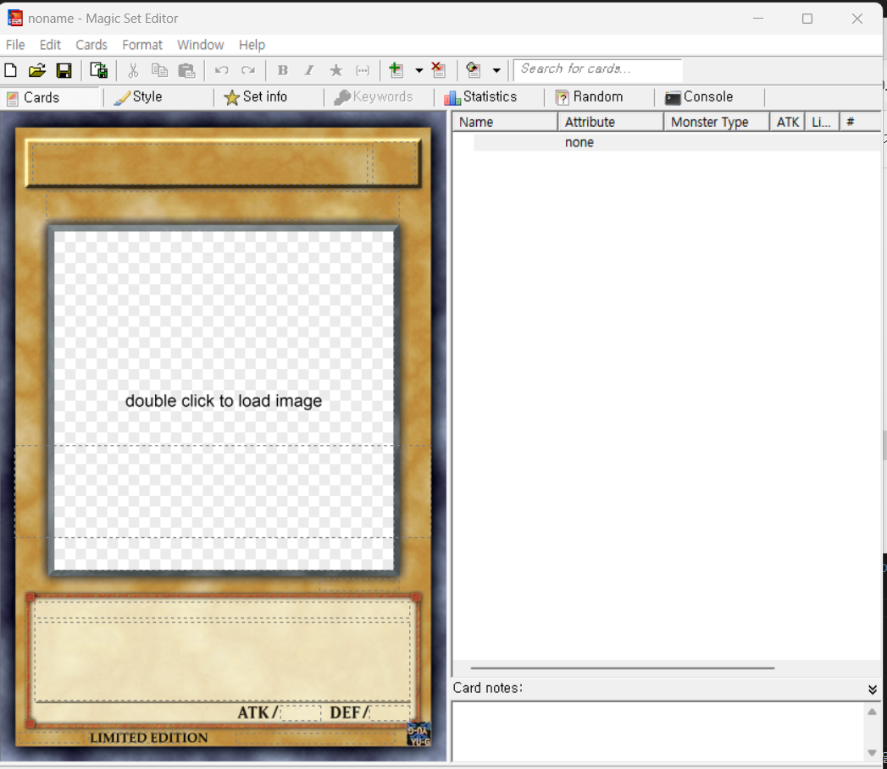

이미지, 즉 카드 이미지를 만드는 것은 꼭 필요하진 않지만 카드의 구별을 쉽게 하거나 원하는 카드를 만들기 더 쉬워집니다.
온라인 상의 카드 이미지 편집기를 사용하거나 magic set editor를 사용하지만, 온라인 상의 것을 사용하는 것이 더욱 편리합니다.

magic set editor 입니다. 카드 주변을 클릭해 꾸밀 수 있습니다.
.mse-set라는 타 파일로 진행도를 저장할 수 있고, 만든 카드들을 한꺼번에 저장할 수 있습니다.